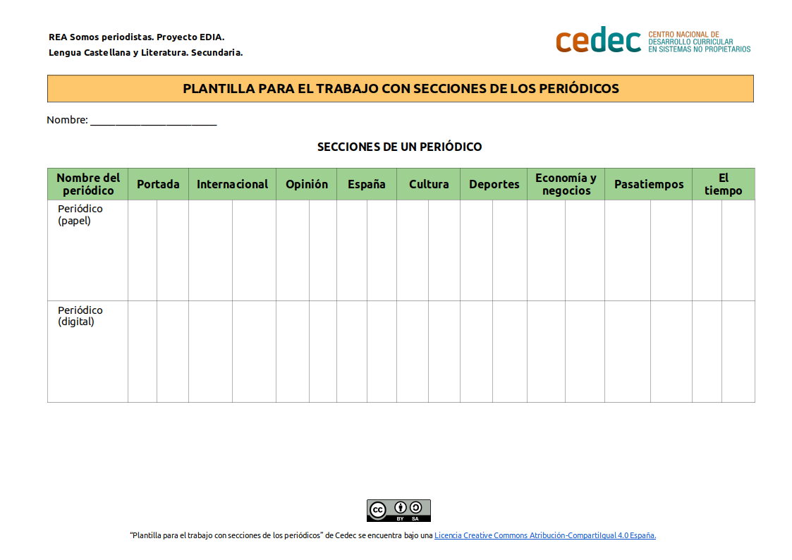

Las secciones de un periódico
Ahora vamos a tocar y a manipular periódicos. Vamos a darles la vuelta y a acostumbrarnos a manejarlos. ¿Conocemos las secciones de un periódico? ¿Sabemos en qué página se sitúan las noticias más importantes? ¿Dónde se suele situar la publicidad en una página?
Como preparación previa a esta actividad, cada grupo deberá llevar al aula uno o varios periódicos (al menos, dos). Debemos utilizar, como mínimo, dos periódicos para comprobar qué secciones son comunes y cuáles son diferentes. La plantilla de análisis de secciones de prensa nos servirá de ayuda (descargar documento editable en formato odt y en pdf).

Antes de comenzar la actividad podemos consultar, como ayuda, una información sobre la estructura del periódico.
Cuando terminemos, subimos ese análisis y conclusiones a Classroom como tarea de grupo.